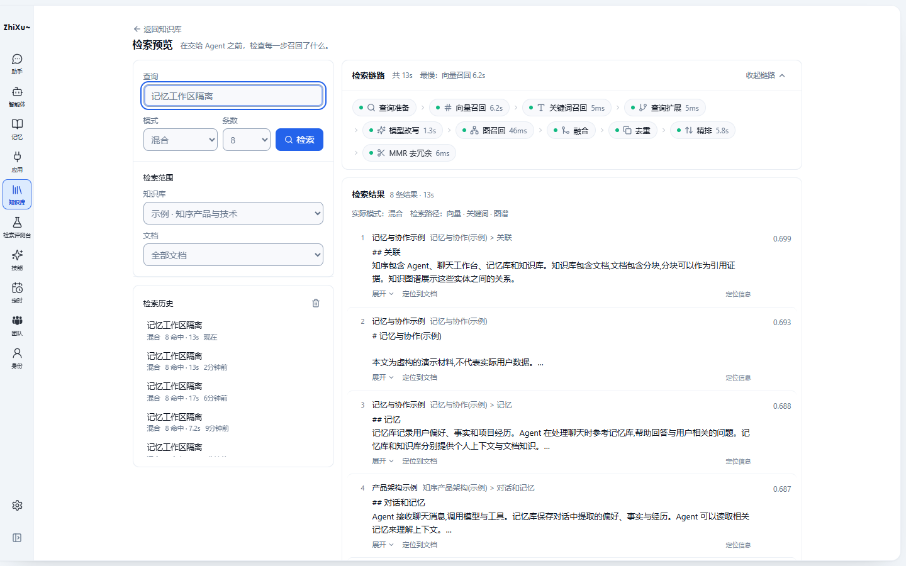
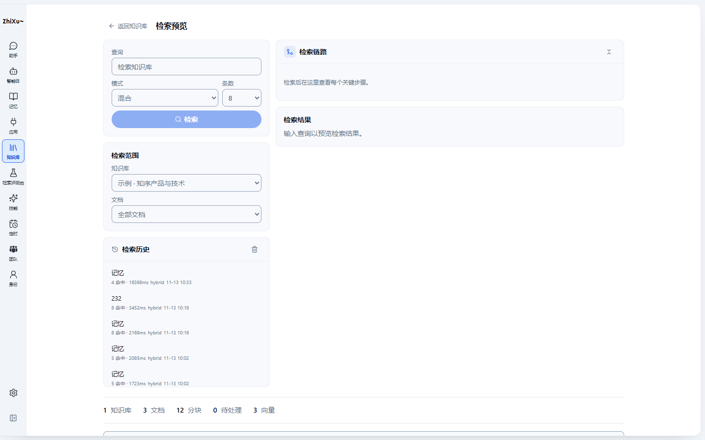
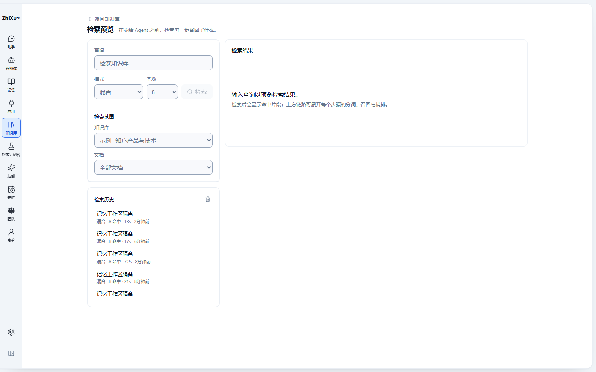
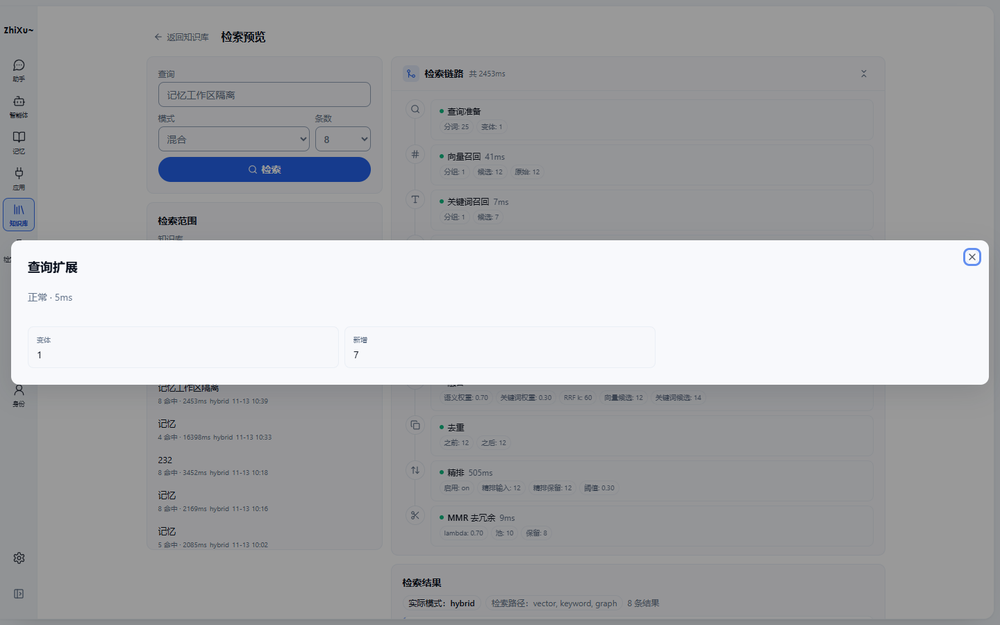
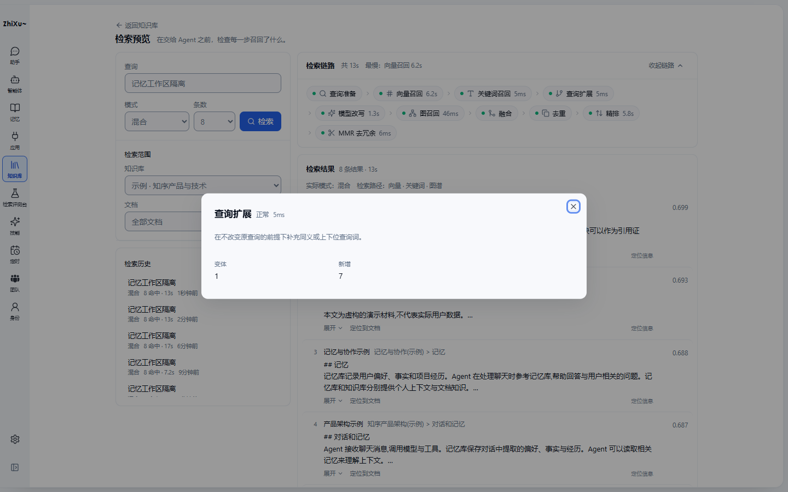
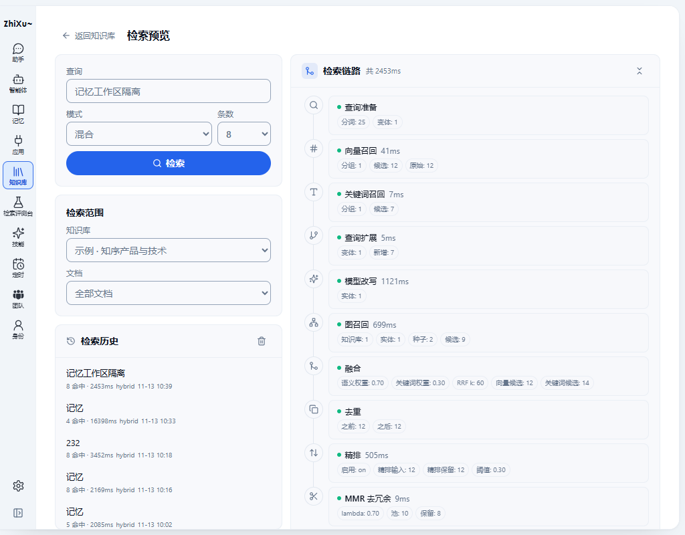
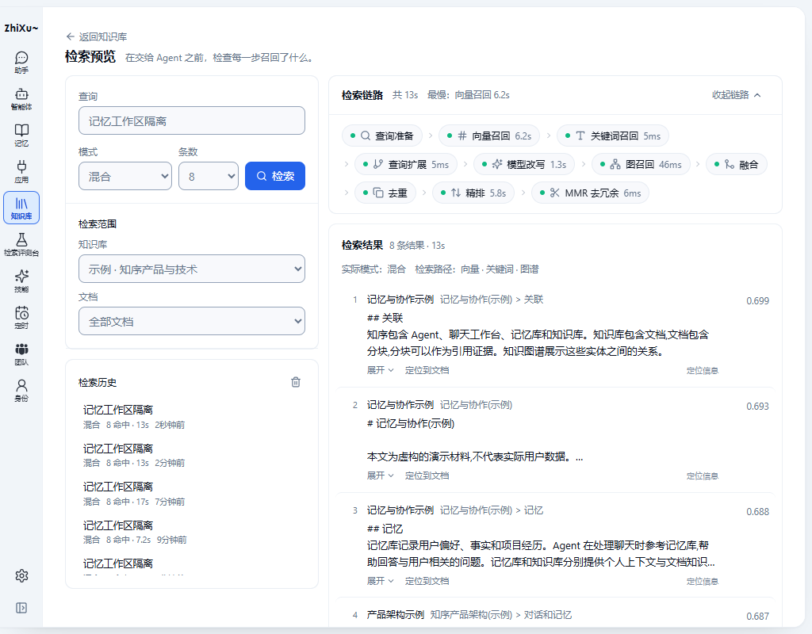
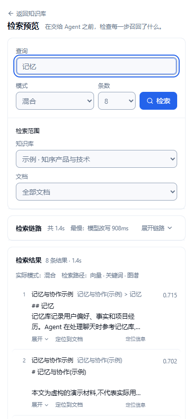

知识库「检索预览」— 去 AI 味改造方案与验收
这个页面把「检索结果」放在了「检索过程」后面，而过程用了 10 张一样的卡片。用户来是为了看检索到了什么，页面先让用户读 719px 的仪表盘。整改后的实测：链路 175px，结果标题从 y=812 提到 y=282，检索按钮从 306px 整行缩到 76px。
1. 改造前 / 改造后（同视口、同数据）







2. 问题与处理
| 编号 | 优先级 | 问题与证据 | 处理 | 状态 |
|---|---|---|---|---|
| P1-1 | P1 | 链路 719px / 结果 top=812（1440×900 只剩 88px；1024×800 完全不可见） | 链路改紧凑流水线；结果紧随其下；实测 175px / top=282 | 已修复并验证 |
| P2-1 | P2 | 10 张相同卡片 + 每张 2–4 个 10px 描边 pill；快慢步骤同权 | 节点 chip（状态点 + 名称 + 时长），次要指标进详情；头部加「最慢」 | 已修复并验证 |
| P2-2 | P2 | 详情弹窗 1408px 宽，内容稀疏 | 新增 .knowledge-stage-dialog 44rem；指标改键值网格；补阶段解释与实际值 | 已修复并验证 |
| P2-3 | P2 | 中文界面直出 hybrid、fts、16398ms、11-13 10:33 | 模式 / 路径 / 状态本地化；时长 16.4s；时间用相对时间 | 已修复并验证 |
| P2-4 | P2 | 检索按钮 306×36 整行；禁用态是 50% 主色浅紫 | 与「条数」同排，固定 76px；禁用态用中性灰 | 已修复并验证 |
| P2-5 | P2 | 查询 / 范围 / 历史三张等权卡片 | 合并为「控制」与「历史」两段面板，hairline 分隔 | 已修复并验证 |
| P2-6 | P2 | 初始态两条空态说同一件事 | 未运行时隐藏链路；结果区只留一条带去向的提示 | 已修复并验证 |
| P2-7 | P2 | 检索页底部残留知识库统计条与知识库列表 | KnowledgePage.tsx 的统计与列表同时判断 !retrievalOpen | 已修复并验证 |
| P3-1 | P3 | 链路头部主色 icon 气泡；圆形折叠图标语义不清 | 去装饰气泡；折叠改为「收起 / 展开」+ chevron | 已修复并验证 |
| P3-2 | P3 | 命中行带左色条、阴影、评分胶囊，8 条占满屏 | 紧凑列表：序号 + 文档/章节/页码 + 3 行正文 + 右对齐分数 | 已修复并验证 |
| P3-3 | P3 | 详情里出现 modeUsed、outcome 与原始 key 标题 | 映射为「实际模式 / 结果 / 模型 / 原因」；分组标题本地化 | 已修复并验证 |
3. 逐元素改造账本
| ID / 位置 | 决定 | 现状 → 改造后 | 原因 / 实现映射 |
|---|---|---|---|
| LAY-01 页面头部 | 修改 | 返回胶囊按钮 + 16px 标题 → 文字返回 + 标题 + 一句用途说明 | 返回是导航不是主操作；说明回答「这页做什么」。复用原生 button + rounded-control |
| LAY-02 左栏结构 | 合并 | 查询 / 范围 / 历史三卡 → 控制面板（查询 + 范围）+ 历史面板 | 减少三层等权边框；历史是复用列表，不是输入的一部分 |
| LAY-03 底部统计条 | 移除 | 检索页仍显示 1 知识库 / 3 文档 / 12 分块… | 与当前任务无关；KnowledgePage 增加 !retrievalOpen |
| LAY-04 底部知识库列表 | 移除 | 检索页下方残留搜索框、筛选与知识库卡片 | 检索是独立页；列表条件同样补 !retrievalOpen |
| FORM-01 查询 | 保留 | 12px 标签 + Input h-9，行为不变 | 原生 label 与 aria-label；Enter 提交由 form 提供 |
| FORM-02 模式 | 保留 | 原生 select，显示「混合 / 语义 / 关键词」 | 项目已有原生 select 惯例；不为三个枚举引入自定义 combobox |
| FORM-03 条数 | 修改 | w-20 → 4.75rem，与模式、按钮同底对齐 | 行内对齐；避免三行控件叠高 |
| BTN-01 检索 | 修改 | 306×36 整行圆角胶囊、禁用浅紫 → 76×36 次主按钮、禁用水墨灰 | Button size="sm" + disabled:bg-muted；与知识库页右上主按钮同尺寸语言 |
| SEL-01 知识库范围 | 保留 | 原生 select，切换后清空结果与竞态序号 | 既有行为正确，仅调整标签字号与间距 |
| SEL-02 文档范围 | 保留 | 加载中禁用，空值=全部文档 | 最大 200 篇，足够本地预览；超限需服务端搜索，本期未做 |
| LIST-01 历史行 | 修改 | 「4 命中 · 16398ms hybrid 11-13 10:33」→「混合 8 命中 · 1.7s 2 分钟前」 | 模式本地化、时长格式化、相对时间；点击回填并重跑的行为不变 |
| BTN-02 清空历史 | 保留 | 图标按钮，aria-label/ title = 清空历史 | 破坏性操作保持无二次确认但仅清本库历史；沿用既有 mutation |
| CANVAS-01 链路容器 | 修改 | 卡片列表 719px → 流水线 175px（1440）/ 3 行（1024） | 回答「哪一步慢、走了哪些路径」，不是逐条读仪表盘 |
| CANVAS-02 链路节点 | 修改 | 28px 圆形图标 + 卡片 + 指标 pill → 状态点 + 14px 图标 + 名称 + 时长 | 点击打开详情；状态用色点，非 ok 才显示状态词；入场 45ms 递增 |
| CANVAS-03 头部信息 | 新增 | 只显示总计 → 总计 + 「最慢：向量召回 6.2s」 | 慢查询时第一眼定位瓶颈 |
| BTN-03 收起 / 展开 | 修改 | 7×7 圆形 chevrons → 文字按钮 + chevron | 图标语义不明；保留 aria-label 与折叠行为 |
| RES-01 结果头 | 修改 | 三枚描边 pill → 标题 + 右对齐「8 条结果 · 1.3s」；下一行模式与路径 | 模式/路径是解释，条数/耗时是结果规模 |
| RES-02 命中行 | 修改 | 左色条 + 阴影 + 评分胶囊 + 定位胶囊 → 分隔线列表 | KnowledgeCitation（唯一调用方）重写；分数右对齐 tabular-nums |
| BTN-04 展开正文 | 保留 | 文字按钮 + 旋转箭头；3 行截断 ↔ 72 高度滚动 | 行为与 aria-expanded 不变 |
| BTN-05 定位到文档 | 保持 | 描边胶囊 → 文字按钮 | 打开分块弹窗的行为不变 |
| RES-03 定位信息 | 保留 | details 折叠展示 docId / chunkId | 诊断信息不占主视觉 |
| DLG-01 阶段详情 | 修改 | 近满宽 → 704×250；状态与耗时并入标题行 | .knowledge-stage-dialog；Radix Dialog 焦点与 Esc 沿用 |
| DLG-02 指标 | 修改 | 描边盒子 → 无边框键值网格；布尔显示是/否 | 指标是读数，不是卡片 |
| DLG-03 值列表 | 修改 | 大写原始 key（TOKENS）→ 分词 / 图谱标签 / 降级 / 召回路径 | 展示实际分词与实体，不再只给计数 |
| DLG-04 分数表 | 修改 | 只有 chunkId → 文档名 + 短 chunkId；精排显示前/后/变化 | 用 docsById 与命中映射反查标题；完整 id 放 title |
| DLG-05 标量行 | 修改 | modeUsed / outcome / model / reason → 实际模式 / 结果 / 模型 / 原因 | 诊断码保留原文（等宽），标签本地化 |
| BG-01 页面背景 | 保留 | 页面 --paper 与白色面板，沿用知识库页 | 不引入渐变 / 装饰纹理；层级靠边框与间距 |
4. 组件与实现映射
| 能力 | 来源 | 版本 / 入口 | 用法 |
|---|---|---|---|
| 按钮 | 项目封装 webui/src/components/ui/button.tsx（CVA） | — | size="sm"，默认 rounded-control；禁用态覆盖为 muted |
| 输入 | 项目封装 ui/input.tsx | — | h-9，保留原生 label |
| 下拉 | 原生 select | — | 与设置面板一致；不新引组件库 |
| 弹窗 | KnowledgeDialogContent + Radix Dialog | @radix-ui/react-dialog 1.1.15 | Radix Dialog 文档（访问 2026-11-13）；焦点陷阱、Esc、滚动锁定来自该库 |
| 图标 | lucide-react | 0.469.0 | lucide.dev/icons（访问 2026-11-13）；14px 与文字基线对齐 |
| 令牌 | src/globals.css | --radius-panel / --radius-control / --border / --muted | 不新增局部魔法色；状态色沿用 emerald / amber / destructive |
本次不切换组件库：页面只用到按钮、输入、原生下拉、弹窗，项目封装与令牌齐全。为三个枚举引入 Ant Design / MUI 会造成按钮、表单、弹窗三套风格并存，并增加包体积。方案中的界面均为真实组件在真实实例中的截图，不是仿制样例。
5. 字体试排与决定
- 基线
--font-ui系统栈；页面 computed font 实测为该栈；数字统一tabular-nums；ID 用--font-code- 候选
- A 统一中文无衬线（雅黑 / PingFang）；B 标题衬线；C 数字与编号等宽
- 决定
- 沿用现有系统栈（按项目品牌基线采用）：与知识库、记忆、聊天页一致，零字体下载，Windows/macOS 回退明确
- 未采用
- B 与工具页气质不符；C 增加中西文混排，收益仅是分数对齐，现用 tabular-nums 已足够
- 状态
- 已采用基线，未新增字体文件；试排页可切换三种角色核对真实文案与窄屏断行
6. 状态、响应式与验收
- 状态：初始（单一空态）、检索中（按钮 spinner + 链路加载行 + 结果加载行）、有结果、无结果（含作用域过滤原因）、失败（alert）均已实现；无结果与失败由
knowledge-page.test.tsx断言。 - 响应式：1440 结果
top=282；1024 结果首屏可见；390 顺序为「查询 → 范围 → 链路 → 结果 → 历史」，加载即窄屏时链路默认收起。 - 键盘：Tab 可达检索、范围、历史、节点与命中行操作；Esc 关闭详情；折叠按钮保留 aria-label。
- 命令：
npx tsc -p tsconfig.build.json --noEmit通过；vitest run src/tests/knowledge-page.test.tsx27/27；vitest run src/tests/i18n.test.tsx27/27；eslint 8 个改动文件无输出；vite build成功。 - 未验证：读屏软件、200% 缩放、真实移动设备；移动端链路默认收起逻辑仅按初始视口判断，运行中缩放窗口不会自动折叠。
